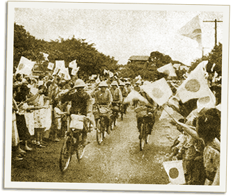

|
j
a v a s c r i p t |
January 8, 1942

Japanese civilians welcome the conquerors.
The city got its first good look at Japanese troops today and was not impressed. We stood on the sidewalks as they marched in without fanfare or formation, wearing shabby khakis and nondescript caps instead of helmets. Some appeared unarmed while others weren’t even wearing boots. A few fanned themselves as they walked in the heat of the day; others rode bicycles! Rice is getting scarce as Japanese trucks continue to cart away sack after sack from the National Development Corp. We expect a critical shortage to develop in six months. A few are going to the provinces to buy a sack of rice (about 24 gantas) at 60% over the fixed price rather than stand in line four to six hours for one measly ganta — and sometimes miss out. After going missing for 29 days, our lavandera is back with our laundry, telling a tale of bombs, transportation woes and an escape into the mountains — clothes and all! |
|
|
|
|